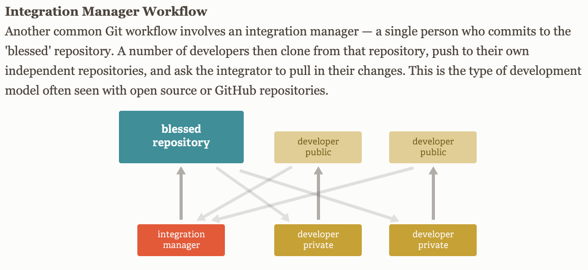
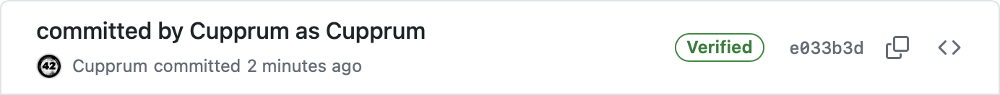

One day over a dinner with a friend, we discussed the vigilant mode, which is a feature on the GitHub platform used to verify cryptographic signatures in commits.
The outcome of the conversation was that if Git and GitHub support verification of signature in commits, then there must be a reason for it.
In the following post, I will try to shed a bit more light on this topic.
I have created a new public repository in GitHub.
Let's clone the repository and add an initial commit and see the result in Github.
# Clone.
> git clone "git@github.com:Cupprum/git-gpg-signing.git"
> cd git-gpg-signing
# Config.
> git config user.name "Cupprum"
> git config user.email "branisa.samuel@icloud.com"
# Create commit.
> echo "Time is an illusion. Lunchtime doubly so." > test.txt
> git add test.txt
> git commit -m "committed by Cupprum as Cupprum"
> git push
How does GitHub make sure I am really me?
Who am I even? That is a better question.
I am a user! I configured Git with my information. However, Git is a tool whose main purpose is a "distributed version control system".
GitHub is the platform here. GitHub is used as the main server (even though Git is distributed). People use GitHub
as a service for collaboration on code-bases, therefore all the identity and access management has to be done on
the
side of GitHub.
The terms Authentication and Authorization are sometimes used interchangeably, however they have different meanings.
There are two primary methods for communication with a GitHub repository, each using different security mechanisms for authentication purposes.
The first method is facilitated through SSH, utilizing asymmetrical cryptography.
The second method involves the use of HTTPS, wherein a Personal Access Token (PAT) serves as the means of authentication.
When I push a commit to a repository, my local Git authenticates against GitHub (using SSH or PAT) and the authenticated profile is authorized to execute the push functionality. Authentication in this case means that the person who pushed the commit to GitHub is a user on the GitHub platform. Authorization means that the GitHub user is authorized to push commits to the repository.
By nature Git is distributed. This allows for different types of workflows. They are discussed more in the following About Git section. But the workflow I want to highlight is the following.
What if I want to push a commit created by a different person?
By default, GitHub cannot verify who created the commit because the commit does not contain any secret to prove its origin. However, there is an option to create a special type of branch, the protected branch, which can enforce that only commits which were signed, and therefore contain a secret, can be pushed to the specific branch.
What does a commit look like?
Luckily there are already many great existing resources which explain this topic much deeper. The Official Git Book or talk by John Britton of GitHub.
What's important for us here is that commits are snapshots of the tree and that they are represented as files in the .git/objects folder. The git log command shows commit logs with details about each commit.
> git log
commit 6092402952852e69abaf9f1e84624a804f081c88
Author: Cupprum
Date: Mon Apr 22 00:01:18 2024 +0200
committed by Cupprum as Cupprum
These logs also include commit hash. The internal representations of objects in Git are compressed but luckily git offers a set of plumbing commands for inspection of git objects.
The git cat-file command can show us the internal representation of a commit. We use a commit hash obtained from git log.
> git cat-file -p 6092402952852e69abaf9f1e84624a804f081c88
tree b1eb7366a65119f68caf12ae975bc2f97f378c7d
author Cupprum 1713736878 +0200
committer Cupprum 1713736878 +0200
committed by Cupprum as Cupprum
The git show command can format the commit in a more readable way and provide additional information if we specify extra flags.
> git show --show-signature 6092402952852e69abaf9f1e84624a804f081c88
commit 6092402952852e69abaf9f1e84624a804f081c88
Author: Cupprum
Date: Mon Apr 22 00:01:18 2024 +0200
committed by Cupprum as Cupprum
diff --git a/test.txt b/test.txt
new file mode 100644
index 0000000..3264129
--- /dev/null
+++ b/test.txt
@@ -0,0 +1 @@
+Time is an illusion. Lunchtime doubly so.
There is no secret present, which could be used to verify the authenticity of the commit.
This basically means that I can fabricate any commits.
> git config user.name "Guido van Rossum"
> git config user.email "idontwantto@leakguidosmail.com"
> echo "Always look on the bright side of life." > test.txt
> git add test.txt
> git commit -m "committed by Cupprum as Guido van Rossum"
> git push
We can see that GitHub shows it as if I were the real user. It even shows the picture.
Hurray! The creator of Python is collaborating on my project!
This might be an issue for some people. I would not want some malicious work published under my name.
Let's try to create one more commit.
> git config user.name "Robert Gers"
> git config user.email "idontwantto@leakroberstsmail.com"
> echo "One toke over the line, sweet Jesus." > test.txt
> git add test.txt
> git commit -m "committed by Cupprum as Robert"
> git push
The commit is represented on the GitHub platform in the following way:
Next to the commit message we can now see that the commit is unverified.
Verified, Partially verified, Unverified.
Vigilant mode is a really nice feature provided by the GitHub platform which allows verification of commit signatures. Signing commits is a feature of Git. Signing can be set up in an automated way. Vigilant mode automatically flags all commits on the GitHub platform that do not contain a valid GPG signature.
GPG is a tool used for secure asymmetric cryptographic operations.
Asymmetric cryptography uses a combination of
private and public keys. If Alice holds the private key, she can use it to either encrypt or sign messages. Bob,
who holds the public key, can then either decrypt or verify these messages.
Here are some interesting documentation links: How to generate GPG key pair and Automatically sign each commit.
Once I have set up the GPG keys, I will try to execute one more commit. This commit will be signed using the -S git flag.
> git config user.name "Cupprum"
> git config user.email "branisa.samuel@icloud.com"
> echo "We apologise for the inconvenience. God's Final Message to His Creation" > test.txt
> git add test.txt
> git commit -S -m "committed by Cupprum as Cupprum"
> git push
The commit is represented on the GitHub platform in the following way:

This new commit is tagged as verified because GitHub was able to verify the commit's signature using the public key that I uploaded to the GitHub platform. Essentially, this means we can now mathematically prove the origin of the commit.
We can also inspect how the signed commit differs from a normal commit.
> git cat-file -p e033b3de746d3dd85fbd4fae48620a7d33dc53b6
tree ec4efc48a7f224cbed1257fd234951ddd5b37548
parent fef1eb48bb012c79fdd8cde30af34f3eb17f8e1a
author Cupprum 1713737041 +0200
committer Cupprum 1713737041 +0200
gpgsig -----BEGIN PGP SIGNATURE-----
iHUEABYIAB0WIQTLIHQsRt2DrQ/VU/CruIA/s5FApwUCZiWNUQAKCRCruIA/s5FA
p45FAQCvJmhkeyVWoKMaqDe74NQiTLHlhxJ9ogswKyAfOWmifwEAhTPpLm5X5/RO
KA6TggqRienBZXASQ7xk44K5LhHUJws=
=N5EI
-----END PGP SIGNATURE-----
committed by Cupprum as Cupprum
The output of the git cat-file command contains a PGP signature. GPG is a GNU implementation of the OpenPGP standard.
> git show --show-signature e033b3de746d3dd85fbd4fae48620a7d33dc53b6
commit e033b3de746d3dd85fbd4fae48620a7d33dc53b6 (HEAD -> main, origin/main)
gpg: Signature made po 22 apr 00:04:01 2024 CEST
gpg: using EDDSA key CB20742C46DD83AD0FD553F0ABB8803FB39140A7
gpg: Good signature from "Cupprum (GitHub GPG Key on NN Mac) " [ultimate]
Author: Cupprum
Date: Mon Apr 22 00:04:01 2024 +0200
committed by Cupprum as Cupprum
diff --git a/test.txt b/test.txt
index e4023d2..d22327f 100644
--- a/test.txt
+++ b/test.txt
@@ -1 +1 @@
-One toke over the line, sweet Jesus.
+We apologise for the inconvenience. God's Final Message to His Creation
The git show command shows the details of the signature, and also verifies it, if the show-signature flag is used.
Can I verify the commits myself?
Commits are usually verified automatically on the platform or by using the provided Git tooling.
Previously we looked at how the signed commit is represented internally. We can take the output of git cat-file command and split it into Payload and Signature.
# Payload
> cat ./payload.txt
tree ec4efc48a7f224cbed1257fd234951ddd5b37548
parent fef1eb48bb012c79fdd8cde30af34f3eb17f8e1a
author Cupprum 1713737041 +0200
committer Cupprum 1713737041 +0200
committed by Cupprum as Cupprum
# Signature
> cat ./signature.txt
-----BEGIN PGP SIGNATURE-----
iHUEABYIAB0WIQTLIHQsRt2DrQ/VU/CruIA/s5FApwUCZiWNUQAKCRCruIA/s5FA
p45FAQCvJmhkeyVWoKMaqDe74NQiTLHlhxJ9ogswKyAfOWmifwEAhTPpLm5X5/RO
KA6TggqRienBZXASQ7xk44K5LhHUJws=
=N5EI
-----END PGP SIGNATURE-----
Now we can just normally use gpg in order to verify the signature ourselves.
> gpg --verify ./signature.txt ./payload.txt
gpg: Signature made po 22 apr 00:04:01 2024 CEST
gpg: using EDDSA key CB20742C46DD83AD0FD553F0ABB8803FB39140A7
gpg: Good signature from "Cupprum (GitHub GPG Key on NN Mac) " [ultimate]
There are also other methods for creating verified commits on the GitHub platform.
All the commits created on the platform itself (edits in GitHub, or in Github Codespaces) are automatically signed by short-lived GPG keys handled by GitHub.
The good thing about this automated way of signing commits on the GitHub platform is that it is fully automated and does not require any initial setup.
Why should I care about code signing?
Signing commits can make it more difficult for malicious parties to smuggle in code. This can be particularly useful for release managers. Checking whether all commits have been signed before publishing a release could help prevent some issues.
Signed commits also help with traceability in case unwanted code is found.
After Gitea's infrastructure was compromised, they began signing their releases.
Opinions on this subject vary.
Some people advocate that signing only releases is enough. Others believe that once GPG keys are set up, it's easy to configure automated signing of commits, so we might as well also sign the commits. Another group of people argues that by signing each commit, we load the key into memory more often. This means that if an attacker has access to a machine, they will not be able to access the key when it's properly stored, but the key might be found in memory unencrypted. Different opinion is that people do not want to rotate their keys frequently. Yet another opinion is using Subkeys to solve the issue of rotating keys. To which the majority of people without a concrete opinion answer that the overhead of this whole signing setup is getting too complicated to manage properly.
In the recent years, a new standard for signing also emerged, sigstore. It promises to simplify the key management by using short-lived keys. By simplifying the key management, this solution should scale nicer. This standard however targets signing only releases and not commits themselves.
Sigstore is a response to the increasing number of supply chain attacks. The project is now under the Linux Foundation and was co-developed by RedHat and Google.
CPython and Kubernetes are among the first larger projects to sign their releases with sigstore.
GitHub also supports sigstore in order to sign npm packages and sign containers
One of the newer examples of successful supply chain attacks was on Pytorch project. These types of supply chain attacks do not necessarily target only public projects. While I was writing this post the the following supply chain attack on xz utils happened.